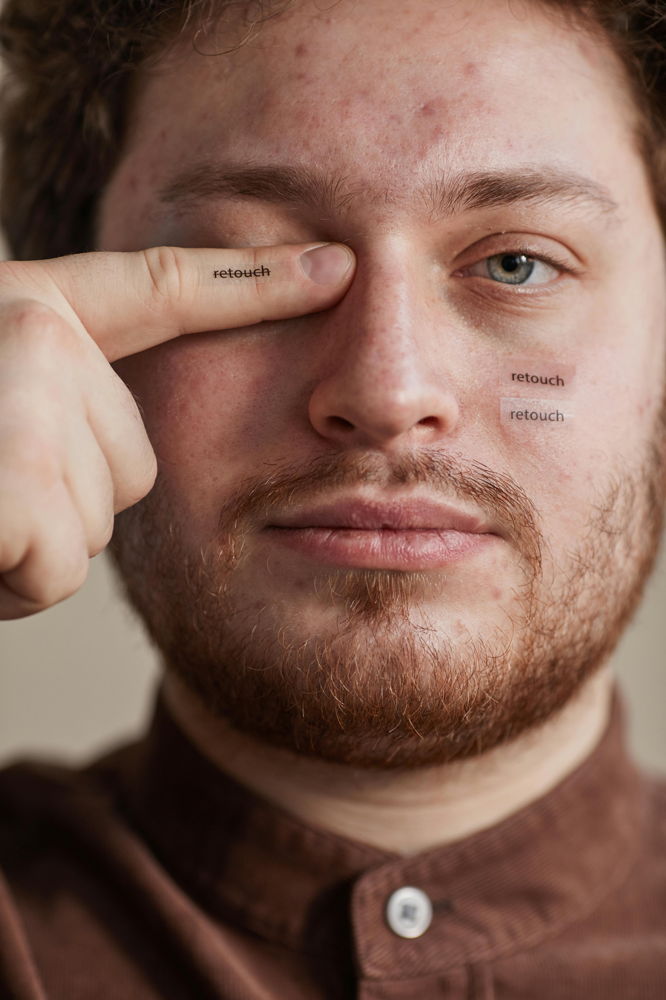
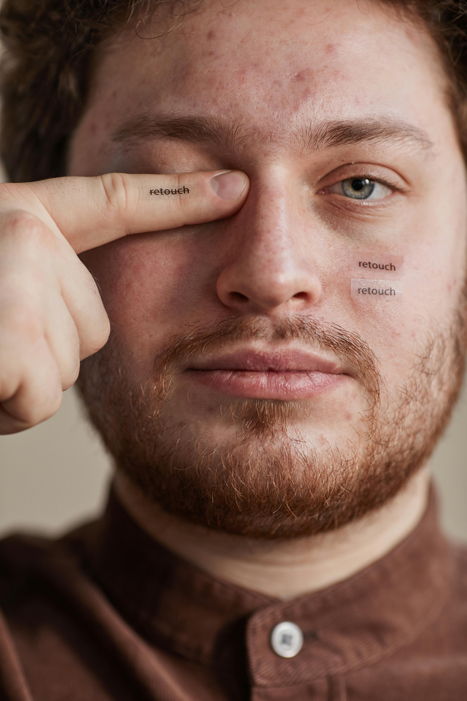

Dobrodošli na stranicu gdje će biti predstavljeni moji radovi na spomenutom kolegiju. U nekoliko tjedana nastave, uspješno ili manje uspješno, odrađeno je 10 odnosno 11 zadataka vezanih uz vježbe.
U prvoj vježbi bilo je potrebno naučiti kako dizajnirati svoj vlastiti font. Ponuđeni programi bili su: FontForge i Fontographer.
Druga vježba bila je uvod u meni novi program Adobe Ilustrator. Naučio sam kako precizno crtati Bezierovim krivuljama te implementirao svoj font iz prvog zadatka.
Treća vježba također je rađena u Adobe Ilustratoru te je već konkretan zadatak u svladavanju osnovnih naredbi u programu
Posljednja vježba prije prvog projektnog zadataka u Ilustratoru. Potrebno je nacrtati čašu koristeći osnovne elemente i gradijent
Prva i uvodna vježba u novi program Adobe Photoshop.Program mi je poznat iz kolegija Informatika 1, prvi semestar. Zadatak je naučiti kako popraviti nedostatke na fotografijama.
 


U ovom zadatku prvi put se susrećem s Kanalima unutar Photoshopa. Kanali olakšavaju samo koloriranje i razlaganje fotografije na primarne boje.
Treća i posljednja vježba u Photoshopu. Fotomontaža je zahtjevan proces unutar Photoshopa i potrebno je paziti i na najmanje detalje poput sjena, zamućenja objekta ovisno o udaljenosti, uskladiti osunčanje i boje...

Za potrebe zadatka koristio sam program DaVinci Resolve. Prvi put se susrećem s programom za obradu videa te sam naučio korisne informacije.


Druga vježba obrade videozapisa također je urađena u DaVinci-u. Vrlo rano sam dobio ideju kako najbolje iskoristiti ovaj program te ovdje možete pogledati cijeli videozapis.